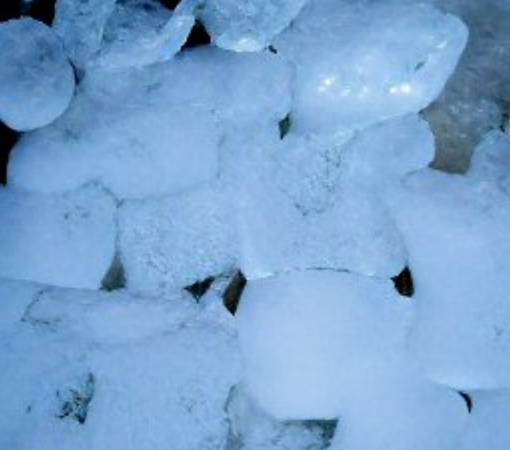

Icy Ice

This dish is a very special one to me, it comes from my grandmother's grandmother's grandmother's brother
who found it engraved on a wood piece in a house he robbed. It all involves the coldest feeling you
will ever experience, but at the same time heart warming, only for the strong people though.
This dish is harder to make, but it will be do-able by even you, with a little bit of training and maybe
a few failed attempts. Just remember, never give up and try your hardest!
Ingredients
- A working freezer (Preferably connected to electricity)
- A block of ice from the Arctic (About 2 meters in diameter)
- Some chilly air from Siberia (about a bag's worth)
Steps
- Buy the cheapest freezer you can find in your town
- Go on a trip in the Artic to extract a fresh piece of ice
- Travel to Siberia and aquire a bag of fresh cold air
- Put all of these in a mixer, then pour the output in a disposable bowl
- Keep them in a freezer for about 5 weeks
- Use explosives to open the freezer
- Enjoy your nice meal!
- Optional: Survive the soldiers coming to your house to stop you
Main Page